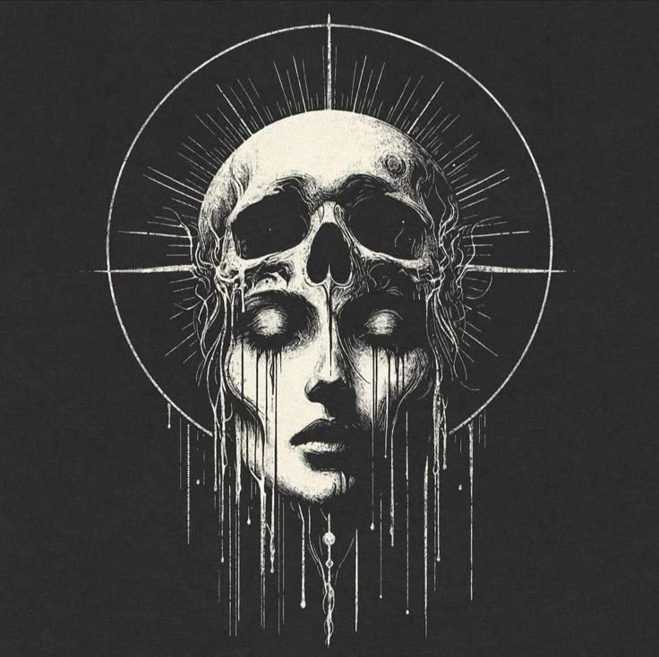
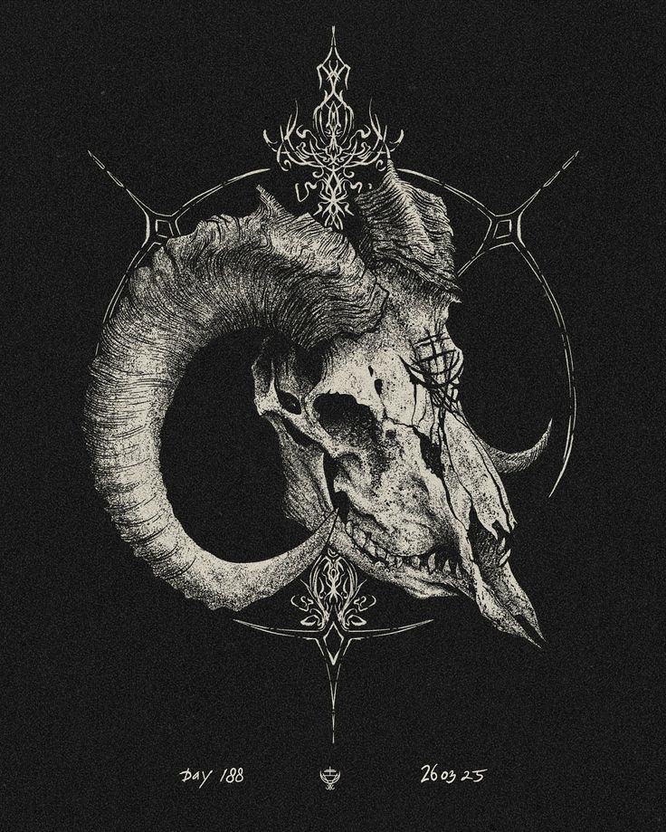

Sejarah seni dimulai sejak zaman prasejarah, tepatnya pada era Paleolitik, ketika manusia purba mulai mengekspresikan diri melalui berbagai bentuk seni, seperti lukisan gua, ukiran batu, dan pembuatan alat-alat dari batu dan tulang.

Lukisan gua di berbagai belahan dunia, seperti yang terdapat di Indonesia (gua Maros, Sulawesi Selatan), menjadi bukti kuat bahwa manusia sudah memiliki kemampuan untuk mengekspresikan diri melalui seni sejak ribuan tahun lalu.

Lukisan gua tersebut menggambarkan kehidupan pada saat itu, misalnya hewan-hewan yang diburu atau aktivitas ritual. Selain itu, terdapat pula cetakan telapak tangan yang dianggap sebagai bentuk seni dekoratif pertama.

Karya seni prasejarah berfungsi sebagai bentuk ekspresi diri, komunikasi, dan juga mungkin sebagai bagian dari ritual atau kepercayaan.